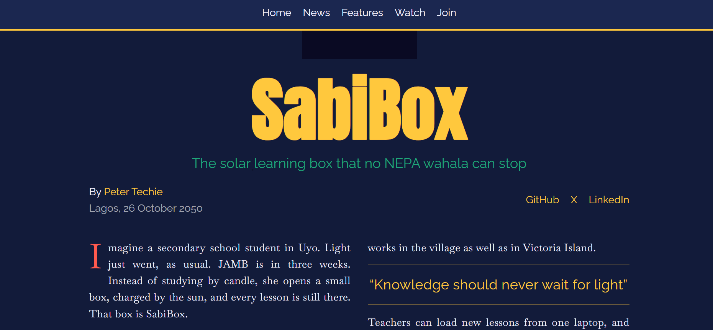
The Naija Future Gazette
HTML & CSS
A magazine-style landing page for SabiBox, an imaginary solar learning box for Nigerian students, combining a CSS Grid newspaper front page, a magazine layout, a fixed flexbox nav, and a sign-up form.
Every project below was built during my freeCodeCamp learning journey. Some were built with pure HTML5, and my more recent ones are built with HTML and CSS as I've moved deeper into styling, layout, and responsive design. Each one taught me something new. Click the links to view them live on GitHub Pages.

HTML & CSS
A magazine-style landing page for SabiBox, an imaginary solar learning box for Nigerian students, combining a CSS Grid newspaper front page, a magazine layout, a fixed flexbox nav, and a sign-up form.
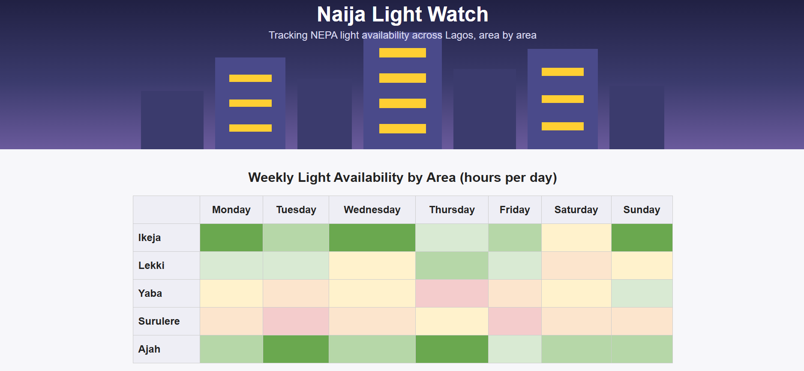
HTML & CSS
A weekly NEPA light-availability tracker for five Lagos areas, topped with a CSS-only city skyline built from flexbox and layered gradients.
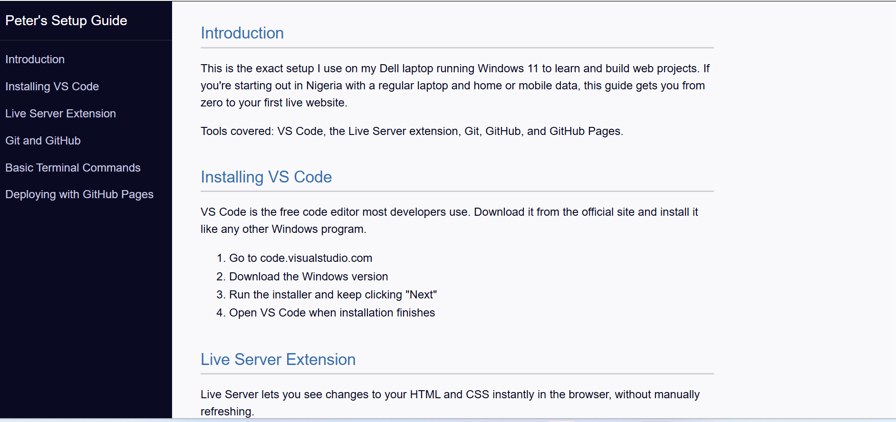
HTML & CSS
A responsive technical documentation page covering VS Code, Live Server, Git, GitHub and GitHub Pages, with a fixed sidebar nav that collapses on mobile.
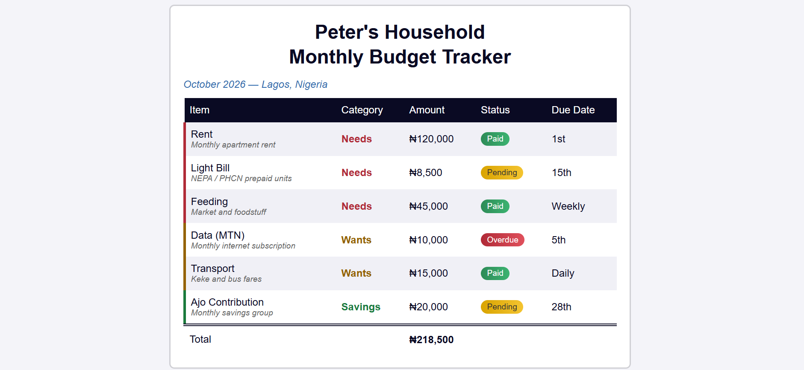
HTML & CSS
A household budget table using attribute selectors, sticky table headers, zebra striping, and gradient status badges.
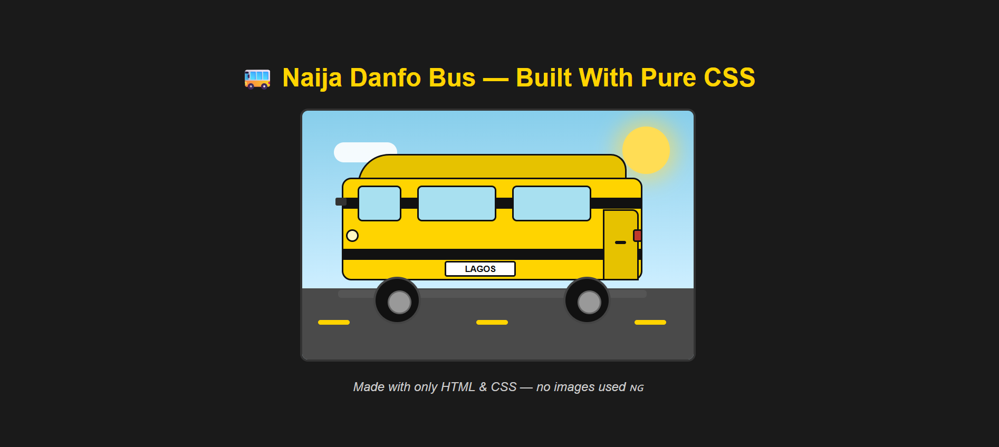
HTML & CSS
A Lagos danfo bus scene drawn entirely with HTML and CSS — no images, just shaped and positioned divs.
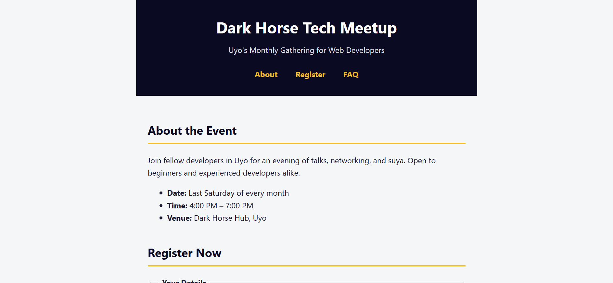
HTML & CSS
A fully accessible event registration page with a skip link, ARIA landmarks, fieldset/legend grouping, visible focus states, and screen-reader-only text.
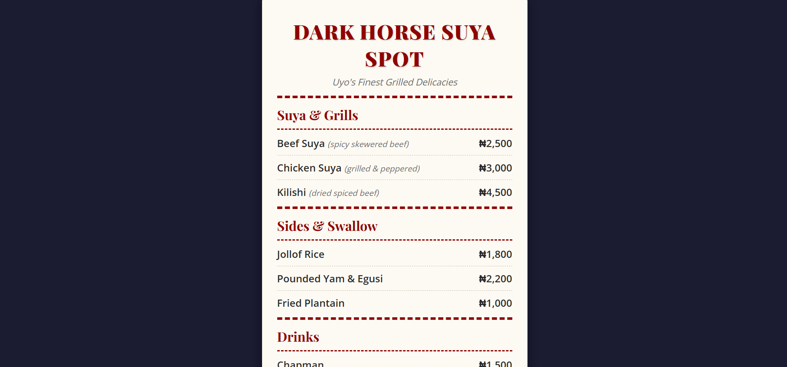
HTML & CSS
A responsive digital restaurant menu card practicing CSS typography, font pairing with Google Fonts, text-shadow, letter-spacing, and a structured divider layout.
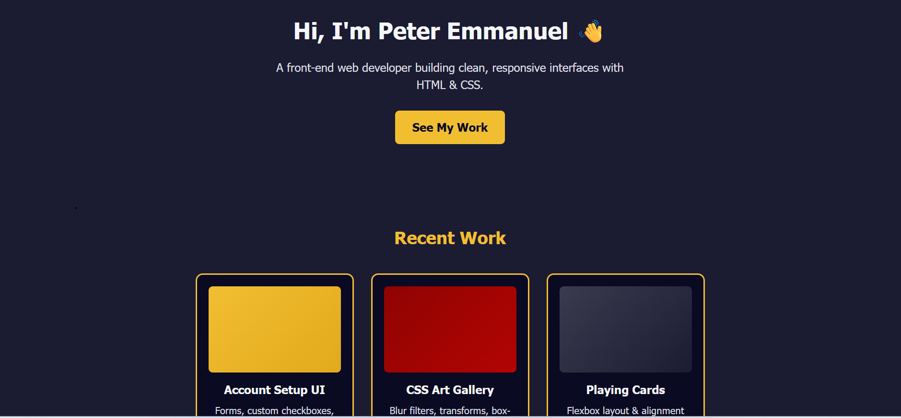
HTML & CSS
A professional, fully responsive portfolio landing page built with Flexbox, navbar, hero section, project gallery, and playing-card-style skills showcase.
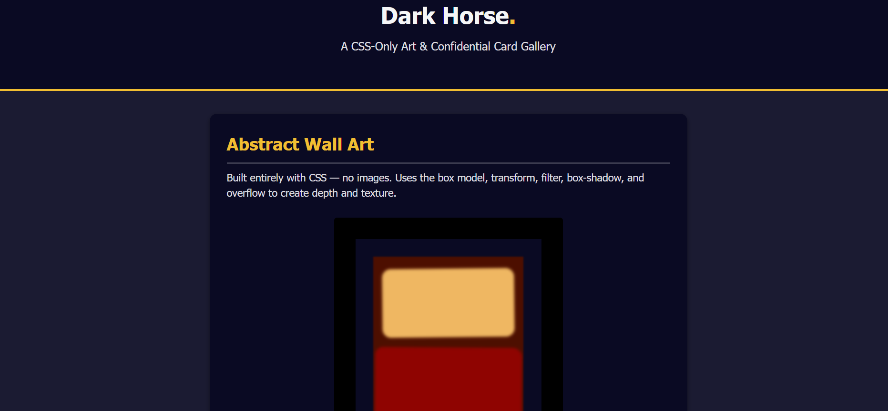
HTML & CSS
A CSS-only art gallery, a Rothko-style abstract painting and interactive blurred profile cards, using the box model, transforms, filters and box-shadow.
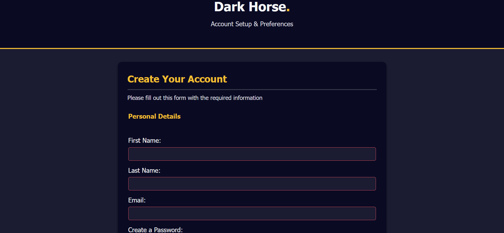
HTML & CSS
A responsive dark-themed account setup page with a registration form, custom-styled checkboxes, and interactive feature selection cards.
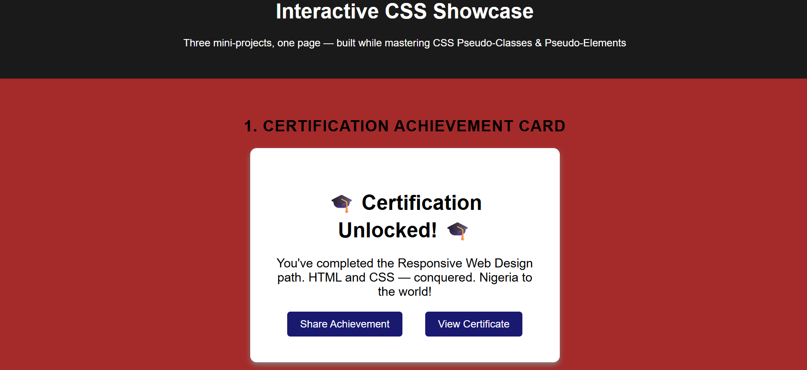
HTML & CSS
Three mini-projects in one, an achievement card, an event RSVP form, and a job application form, built to practice :hover, :checked, and other pseudo-classes.
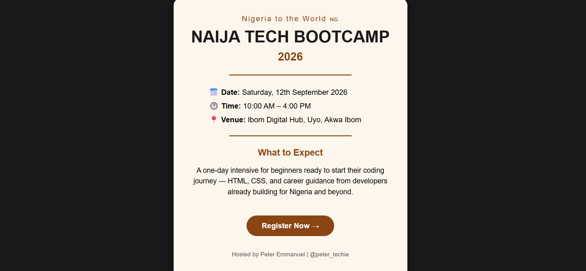
HTML & CSS
A responsive event flyer for a fictional Naija Tech Bootcamp, practicing relative and absolute units, vh, vw, calc, rem.
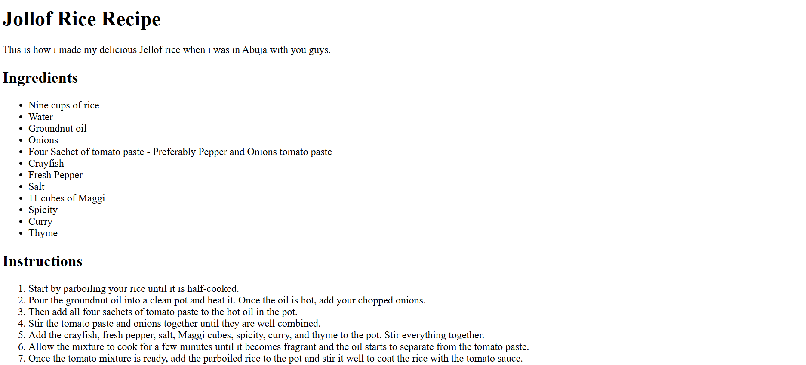
HTML only
A recipe page for Nigerian Jollof Rice featuring an ingredients list, step-by-step cooking instructions, and a food image. My first ever HTML project.
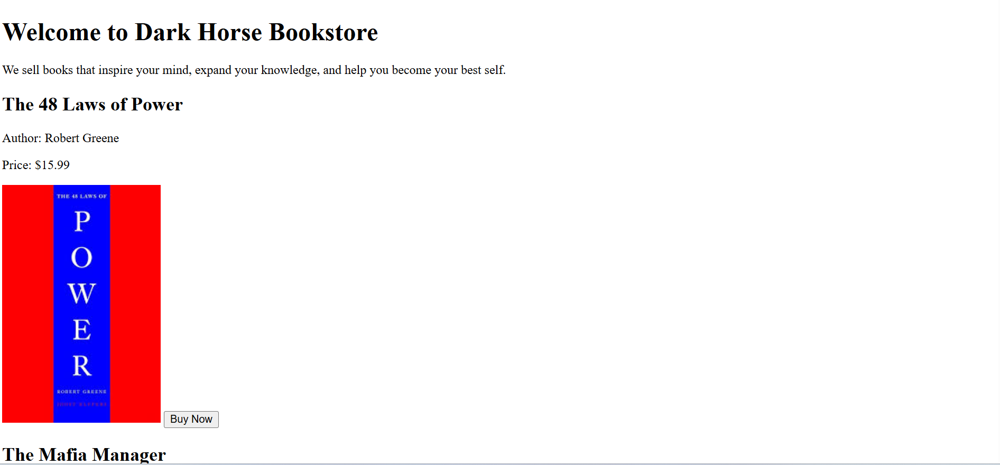
HTML only
A bookstore landing page featuring three book cards, each with a title, author, price, image, and Buy Now button, plus a checkout section.
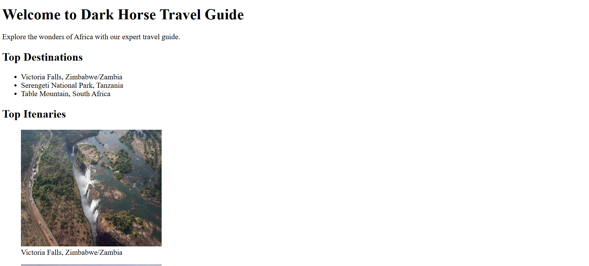
HTML only
A travel guide page for Africa featuring top destinations, each with a clickable image linking to Google Maps and a figcaption description.
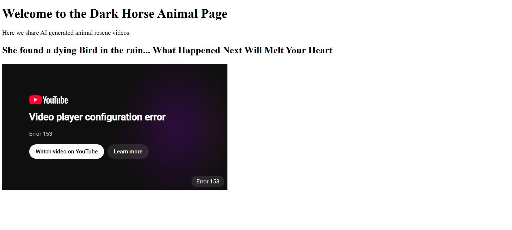
HTML only
An animal rescue page featuring an embedded YouTube video. Taught me the difference between a share link and an embed link, and why GitHub Pages fixes local iframe errors.
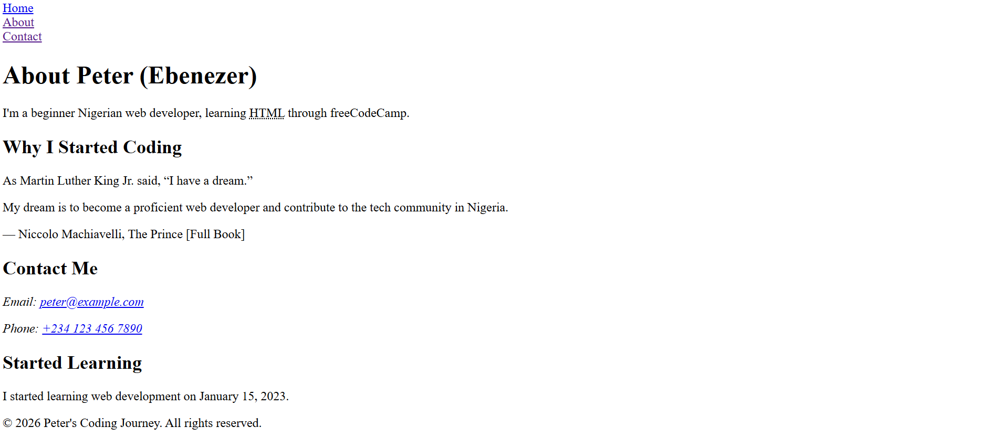
HTML only
A personal about me page sharing my coding journey, a quoted Martin Luther King Jr. reference, and clickable contact links using mailto and tel.
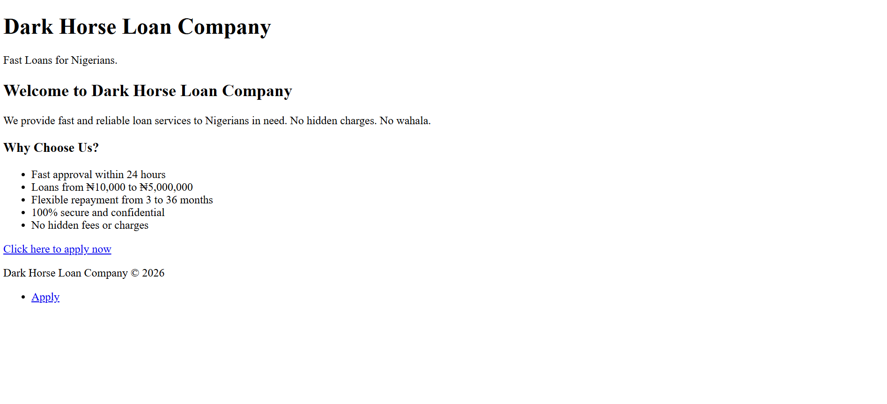
HTML only
A five-page loan application website, welcome page, personal information form, employment details, review page, and a success confirmation page, all linked together.
All my code is publicly available on GitHub. You can see every file, every commit, and every change I have made throughout my learning journey.